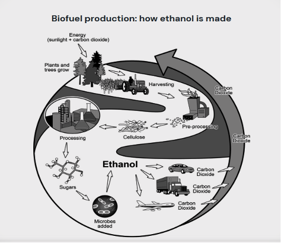

Task 1
You should spend about 20 minutes on this task.
The diagram below shows how a biofuel called ethanol is produced.
Summarise the information by selecting and reporting the main features making comparisons where relevant.
Write at least 150 words.
Task 2
Write about the following topic:
You should spend about 40 minutes on this task.
Some people think that competition at work at school and in daily life is
good thing, others believe that we should try to cooperate more rather
than competing against each other.
Discuss both views and give your opinion
Give reasons for your answer and include any relevant examples from your own knowledge or experience.
Write at least 250 words.